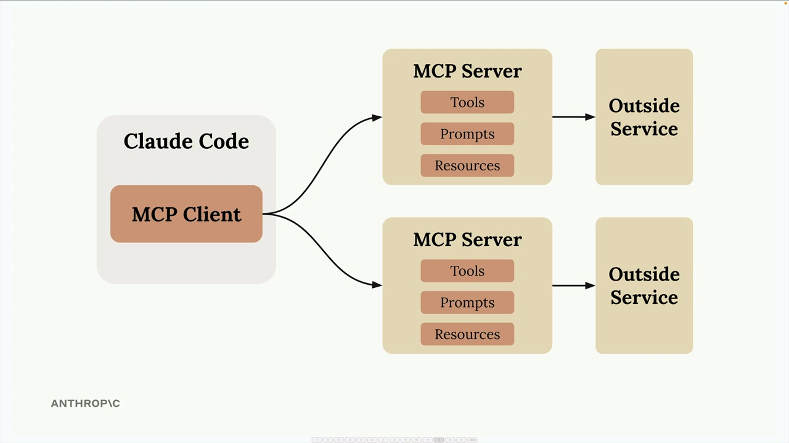
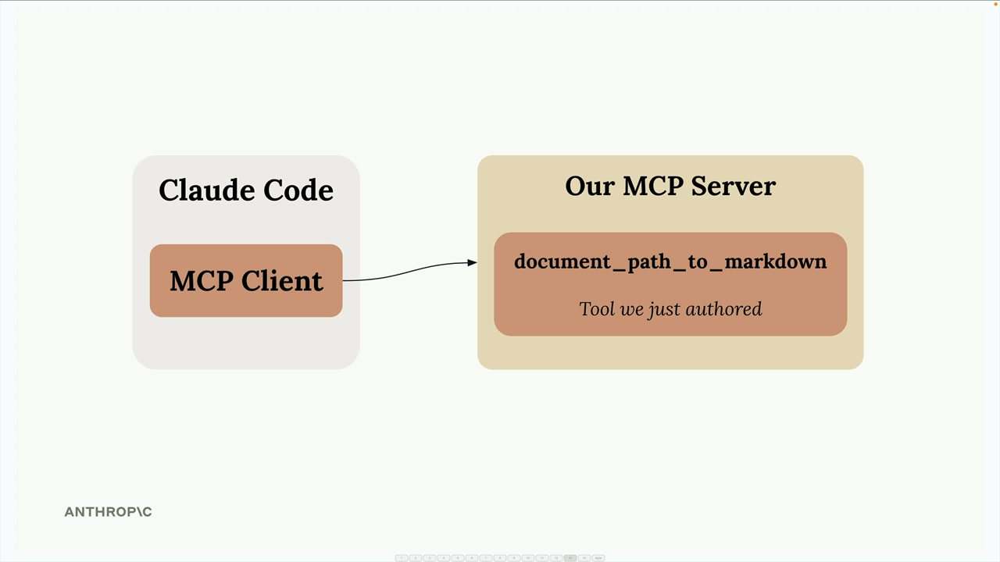
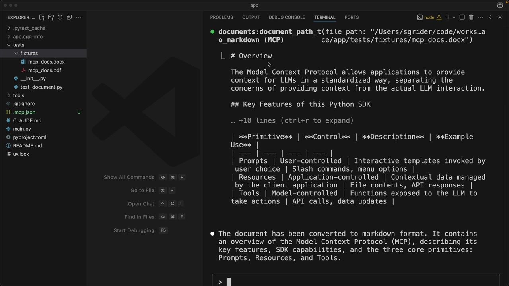
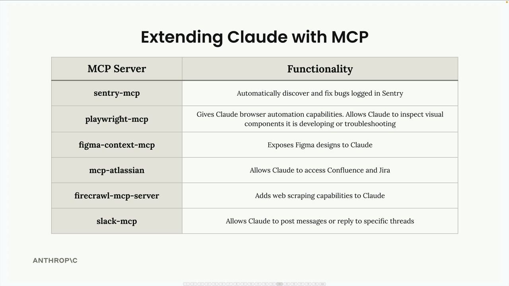

MCP 서버를 통한 기능 확장
Claude Code에는 MCP 클라이언트가 기본으로 내장되어 있어, MCP 서버를 연결하면 Claude의 기능을 대폭 확장할 수 있습니다. 이를 통해 개발 워크플로우를 자신에게 맞게 강력하게 커스터마이징할 수 있는 가능성이 열립니다.
MCP가 Claude를 확장하는 방법
Model Context Protocol을 통해 Claude Code는 MCP 서버를 통해 외부 서비스 및 도구에 연결할 수 있습니다. Claude의 기본 내장 기능에만 의존하는 대신, 특정 도구, 리소스 또는 통합 기능을 제공하는 서버를 연결해 맞춤 기능을 추가할 수 있습니다.

각 MCP 서버는 Tools(동작 수행), Prompts(템플릿), Resources(데이터 접근)의 세 가지 주요 구성 요소를 통해 Claude에 다양한 기능을 노출할 수 있습니다.
MCP 서버 설정하기
Claude Code에 MCP 서버를 추가하는 방법은 간단합니다. 명령줄을 사용해 서버를 등록하면 됩니다:
claude mcp add [server-name] [command-to-start-server]
예를 들어, uv run main.py 로 시작하는 문서 처리 서버가 있다면 다음과 같이 실행합니다:
claude mcp add documents uv run main.py등록이 완료되면 Claude Code가 시작될 때 자동으로 해당 서버에 연결됩니다.
예시: 문서 처리
실용적인 예시로, Claude가 PDF와 Word 문서를 읽을 수 있도록 하는 도구를 만드는 경우를 들 수 있습니다. "document_path_to_markdown" 도구를 갖춘 MCP 서버를 구축하면, Claude에게 문서 내용을 마크다운 형식으로 변환해 달라고 요청할 수 있습니다.

Claude에게 "tests/fixtures/mcp_docs.docx 파일을 마크다운으로 변환해줘"라고 요청하면, Claude는 자동으로 커스텀 도구를 사용해 문서를 읽고 변환된 내용을 반환합니다.

인기 있는 MCP 통합
MCP 생태계에는 다양한 개발 도구 및 서비스를 위한 서버들이 포함되어 있습니다:

- sentry-mcp - Sentry에 기록된 버그를 자동으로 발견하고 수정
- playwright-mcp - 테스트 및 문제 해결을 위한 브라우저 자동화 기능을 Claude에 제공
- figma-context-mcp - Figma 디자인을 Claude에 노출
- mcp-atlassian - Claude가 Confluence와 Jira에 접근 가능하도록 지원
- firecrawl-mcp-server - Claude에 웹 스크래핑 기능 추가
- slack-mcp - Claude가 메시지를 게시하거나 특정 스레드에 답글을 달 수 있도록 지원
나만의 개발 워크플로우 구축하기
진정한 강점은 자신의 개발 프로세스에 맞는 여러 MCP 서버를 조합할 때 발휘됩니다. 예를 들어 다음과 같이 구성할 수 있습니다:
- 프로덕션 오류 상세 내용을 가져오는 Sentry 서버
- 티켓 요구사항을 읽는 Jira 서버
- 작업 완료 시 팀에 알림을 보내는 Slack 서버
- 내부 도구 및 API를 위한 커스텀 서버
이를 통해 Claude가 이미 사용 중인 모든 도구와 서비스를 원활하게 활용할 수 있는 개발 환경이 만들어지며, 자신의 워크플로우에 최적화된 훨씬 강력한 코딩 어시스턴트가 됩니다.